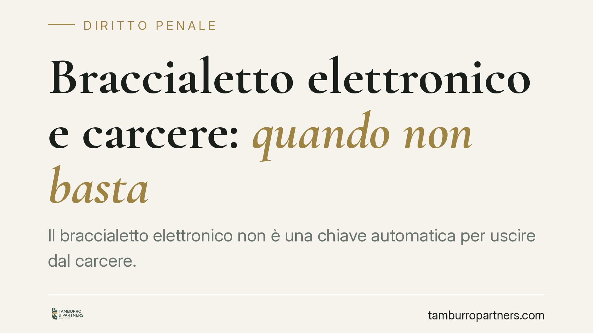

Braccialetto elettronico e carcere: quando non basta
Il braccialetto elettronico non è una chiave automatica per uscire dal carcere. Una recente pronuncia della Cassazione penale chiarisce che il controllo elettronico non basta quando la personalità dell'indagato rivela una persistente propensione alla violenza. Né il rispetto passato delle prescrizioni né il tempo già trascorso in custodia sono, da soli, argomenti risolutivi. Vediamo perché e cosa cambia nella prassi difensiva.

Il caso e un'avvertenza sulla fonte
La questione affrontata riguarda la richiesta di sostituire la custodia cautelare in carcere con gli arresti domiciliari accompagnati dal braccialetto elettronico. La difesa faceva leva su due elementi: il rispetto delle prescrizioni in un momento precedente e il tempo già trascorso in custodia.
*Avvertenza redazionale:* gli estremi della sentenza citata dalla fonte (n. 18193/2026) riportano un anno non ancora maturato e non risultano allo stato verificabili. Trattiamo quindi il principio come espressione di un orientamento della Cassazione penale, invitando alla verifica del dato prima di ogni utilizzo operativo. Il ragionamento giuridico esposto resta comunque coerente con la giurisprudenza consolidata in materia.
Inquadramento normativo
La misura cautelare risponde a una logica graduata. L'art. 275 c.p.p. impone che ogni misura sia adeguata all'esigenza da tutelare e proporzionata al fatto e alla sanzione prevedibile: il carcere è l'*extrema ratio*, applicabile solo quando ogni altra misura risulti insufficiente.
Il perno del ragionamento sulla pericolosità è però l'art. 274, comma 1, lett. c) c.p.p., che fonda la misura sul pericolo concreto di reiterazione di reati della stessa specie o commessi con violenza alla persona. Questa valutazione ha natura prognostica: guarda al futuro, sulla base della personalità dell'indagato desunta da comportamenti e precedenti.
Il braccialetto elettronico si colloca nell'art. 275-bis c.p.p., tra le particolari modalità di controllo che possono accompagnare gli arresti domiciliari. È uno strumento tecnico di sorveglianza, non una misura autonoma.
Cosa dice davvero l'orientamento
Il punto centrale è il limite strutturale del braccialetto. Il dispositivo segnala l'allontanamento dal domicilio o la manomissione, ma non impedisce fisicamente all'indagato di agire. Se il pericolo è quello di una condotta violenta improvvisa, il controllo elettronico interviene *dopo*, non prima.
Da qui la conclusione: quando la prognosi ex art. 274 lett. c) c.p.p. evidenzia una propensione alla violenza radicata nella personalità, il braccialetto non neutralizza il rischio e non può quindi sostituire il carcere.
I due argomenti difensivi vengono smontati sul piano logico:
- Il rispetto passato delle prescrizioni non è di per sé decisivo, perché la valutazione prognostica considera l'insieme della personalità, non un singolo periodo di condotta corretta.
- Il tempo trascorso in custodia non attenua automaticamente il pericolo di reiterazione: non è un fattore che, di per sé, modifica la prognosi sulla pericolosità.
È un'impostazione coerente con la giurisprudenza consolidata secondo cui l'adeguatezza della misura va verificata in concreto e in modo individualizzato, senza automatismi né in senso favorevole né sfavorevole all'indagato.
Implicazioni pratiche
Per chi affronta una richiesta di sostituzione o attenuazione della misura, il messaggio è chiaro: le formule standard non funzionano. Elencare genericamente il rispetto delle prescrizioni o i mesi già scontati non incide sulla decisione.
Ciò che conta è incidere sulla prognosi individuale. La difesa deve costruire un quadro che dimostri l'attenuazione concreta del pericolo di reiterazione: elementi nuovi, mutamenti effettivi delle condizioni personali e ambientali, percorsi documentabili. È un lavoro di argomentazione sulla persona, non un richiamo a categorie astratte.
Sul fronte opposto, chi valuta la misura è tenuto a una motivazione altrettanto individualizzata: non può negare l'attenuazione con clausole di stile, ma deve spiegare perché la personalità dell'indagato resti incompatibile con misure meno afflittive.
Cosa fare in concreto
- Verificare gli estremi esatti della pronuncia (numero, sezione, data) prima di fondarvi una strategia: un dato non confermato è inutilizzabile in atti.
- Concentrare la difesa sulla prognosi ex art. 274 lett. c), non sul mero rispetto formale delle prescrizioni.
- Documentare elementi nuovi e concreti capaci di attenuare il pericolo di reiterazione: lavoro, contesto familiare, percorsi terapeutici o di sostegno.
- Distinguere il piano tecnico da quello prognostico, chiarendo perché nel caso specifico il controllo elettronico sia sufficiente a contenere il rischio residuo.
- È opportuno che la richiesta sia impostata sin dalla prima fase cautelare, quando gli elementi favorevoli hanno maggior peso.
---
Contributo informativo a cura di Tamburro & Partners Avvocati. Non costituisce parere legale.
Ogni condominio ha una storia a sé.
Se gestisci un'amministrazione e vuoi un confronto su una specifica questione condominiale, scrivi allo studio. Ti rispondiamo entro un giorno lavorativo.